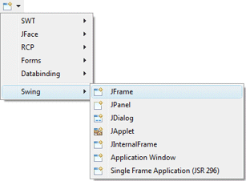
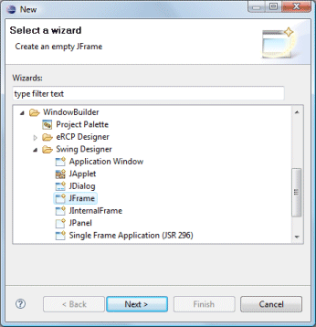
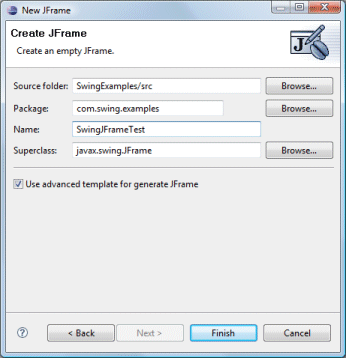

|
Subclasses of the Swing JFrame class can be
created using the Swing JFrame wizard. The wizard can be
selected from the drop down wizard menu or from the
Eclipse New wizard.
To use the wizard, select the project source folder and package to contain the class. Then enter the class name and hit the Finish button. The javax.swing.JFrame class is the default superclass. You can select an alternative superclass by entering its name into the Superclass field or by choosing it via the bottom Browse button. |
|
  |
|
javax.swing.JFrame; public class SwingJFrameTest extends JFrame { public static void main(String[] args) { try { SwingJFrameTest frame = new SwingJFrameTest(); frame.setVisible(true); } catch (Exception e) { e.printStackTrace(); } } public SwingJFrameTest() { setBounds(100, 100, 450, 300); setDefaultCloseOperation(JFrame.EXIT_ON_CLOSE); } } If the Use advanced template for generated JFrame option is checked, the following code is generated which adds an empty 5 pixel margin to the entire window: private JPanel m_contentPane; ... public SwingJFrameTest() { setDefaultCloseOperation(JFrame.EXIT_ON_CLOSE); setBounds(100, 100, 450, 300); m_contentPane = new JPanel(); setContentPane(m_contentPane); m_contentPane.setBorder(new EmptyBorder(5, 5, 5, 5)); When editing Swing JFrames, all of the standard Swing layouts, containers, widgets and menus are available. Custom or third party controls may be added via the Choose Component command. You may also preview your frame using different look and feels using the drop down look and feel list in the toolbar. |